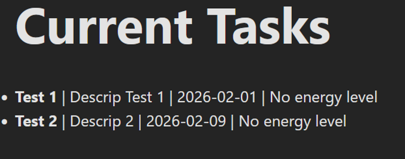
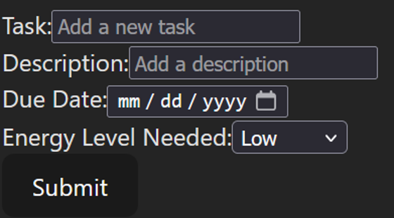
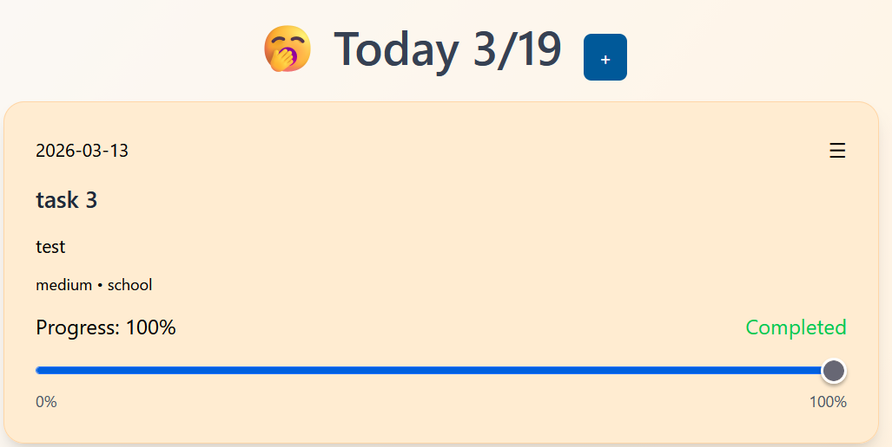
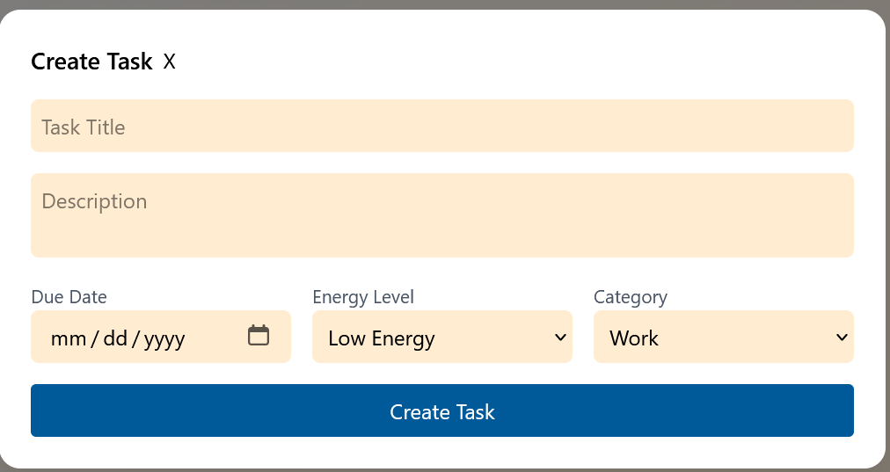

Overview
This page presents the technical development of my capstone project. It is organized into key components of the system, including architecture, database design, and application functionality. Each section highlights artifacts, decisions, challenges, and the evolution of my project, reflecting both the technical and personal growth experienced during the process.
Application Architecture
Initial Architecture
At the start of the project, I created an initial architecture using MongoDB for my database. I believed that a NoSQL database would provide flexibility and scalability for storing tasks. However, as I progressed, I realized my data was structured and did not require the flexibility of a NoSQL solution. This taught me to research what technologies my project needs before starting. I learned that technology need to be tested against project requirements.

Revised Architecture
After evaluating my needs, I switched to SQLite because it is lightweight, structured, and better suited for task data. This simplified my backend while meeting all my project's requirements. Additionally, I integrated Tailwind CSS to improve styling consistency and accelerate frontend development. This was how I learned to adapt my plans when I learn new information, and that adaptability is an improtant skill in software development.

Database Design
I designed a SQL database to store task-related data including task ID, title, description, energy level, due date, category, progress percentage, and completion status. Using Sequelize as an ORM allowed me to interact with the database efficiently while keeping the code maintainable and organized. Designing my database taught me how to think about data relationships and to plan for future features.

UI Design Evolution
The user interface evolved significantly during development. Initially, the layout was minimal, showing tasks and allowing task creation with no styling or guidance. Through stakeholder feedback and the use of Tailwind CSS, I improved visual hierarchy, spacing, and interactivity. This evolution helped me understand the importance of combining usability, aesthetics, and user feedback in frontend development.
Initial UI

Initial task display with basic layout.

Initial task creation interface.
Current UI

Updated task display with improved visual hierarchy and styling.

Enhanced task creation interface with Tailwind CSS styling and better input method.
Application Development and Current Progress
I have built a functional to-do list application that allows users to create, read, update, and delete tasks. The application also includes a progress tracking feature. Currently, I am developing an adaptive task scheduling feature that recommends tasks based on user energy levels, adding complexity and enhancing usability.

Next Steps
This project is connected to my future goal of becoming a full-stack software engineer. By working on both the frontend and backend, I gain practical experience that directly aligns with the work I want to do in my career. Developing the project independently has strengthened my ability to learn on my own, a skill I know will be essential for success in the workplace.
My next steps include continuing the development of my project until completion. I plan to implement a Pomodoro timer, adding the adaptive task suggestion feature, and integrating a calendar to make planning more interactive. With these features implemented, I will consider my project a success.